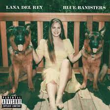

Blue banisters
Blue Banisters is the eighth studio album from Lana Del Rey. Released on October 22, 2021, seven months after her seventh studio album, Chemtrails over the Country Club. The album was produced by Del Rey, Zachary Dawes, Loren Humphrey, Mike Dean and several others.
